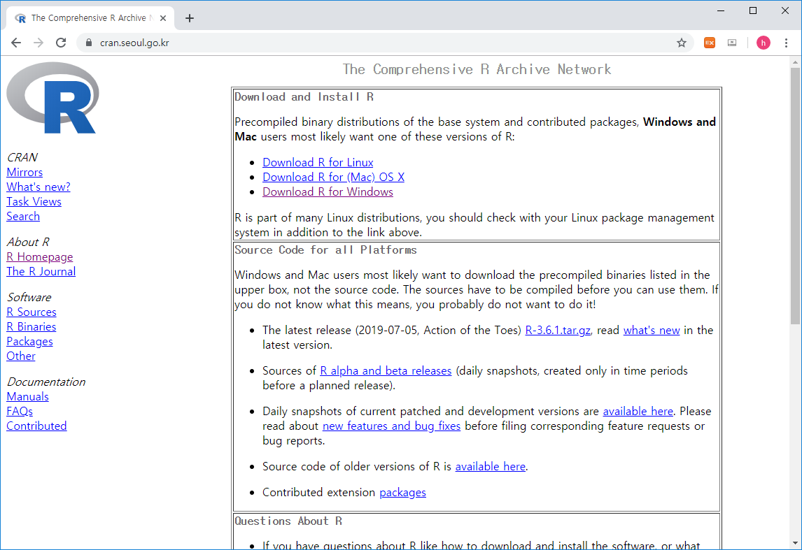
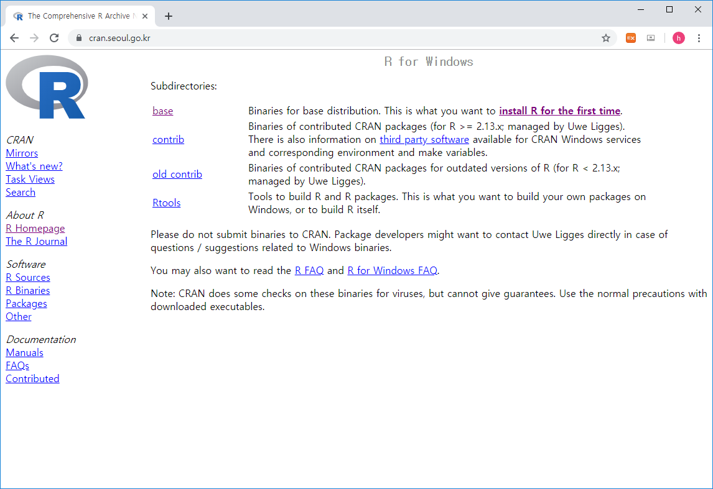
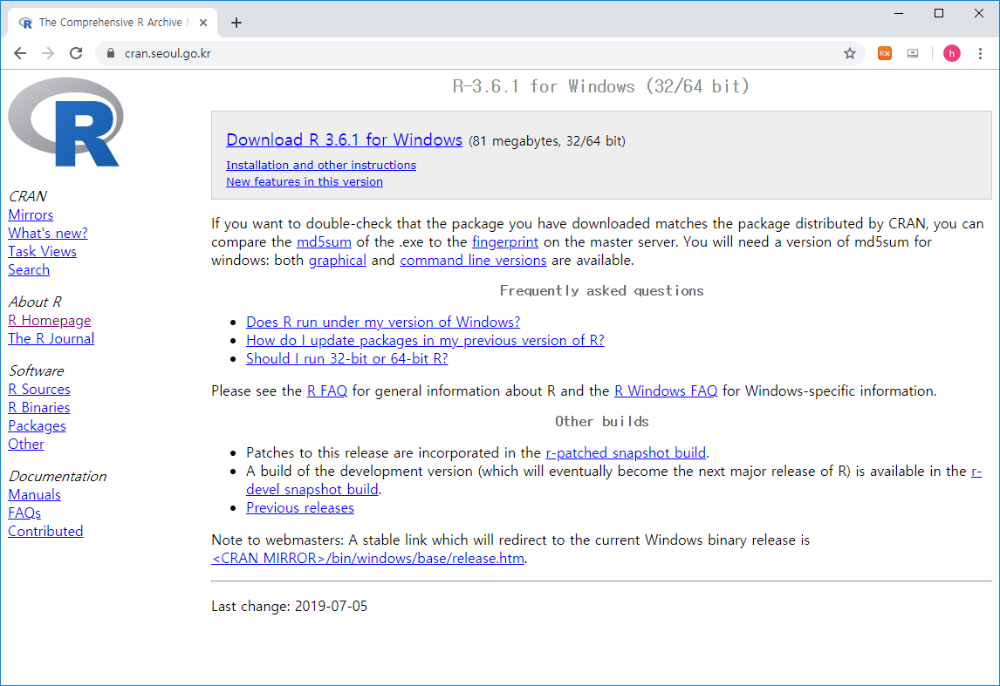

Chapter 2 Introductin 개요
2.1 What is R / Rstudio

- R is a programming language that runs computations (https://www.r-project.org/)
- RStudio is an integrated development environment (IDE) that provides an interface for the programming (https://www.rstudio.com/)
2.2 R / Rstudio installation
- Install R first and then install RStudio second
R




Rstudio


2.3 Rstudio interface

2.4 R programming basics and terminology
- Console: 명령어 입력하는 창
- Code: R 프로그래밍 변수/제어문 모음
- Objects (개체): (데이터) 값이 저장되는 장소
- Data types: Integers, doubles/numerics, logicals, and characters.
- Object types:
- Vectors: 값들의 모임 combine function c() EX: c(6, 11, 13, 31, 90, 92)
- Factors: 범주형 데이터 저장 장소
- Data frames: 2D matrix 형태 데이터 자장 장소
- Conditionals (조건, 제어):
- if: ==, & (AND), | (OR) Ex: (2 + 1 == 3) & (2 + 1 == 4)
- for, while: 반복 수
- Functions (함수, commands): 특정 일을 수행. 함수이름 - 입력값 (arguments) - 출력값 (output) 으로 구성
2.5 Practice coding
- 시작 전 항상 작업 디렉토리 설정
- 예를 들어 c: 아래 새로운 디렉토리 rstat01 을 만들고 이를 작업공간으로 설
getwd()
dir()
setwd("C:\\rstat01")
getwd()
dir()